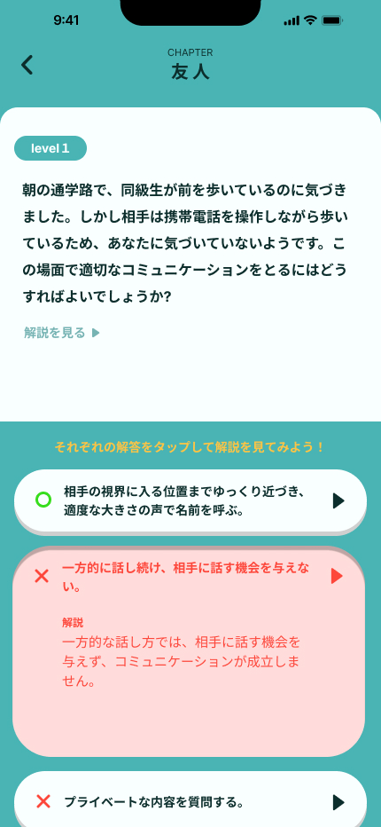
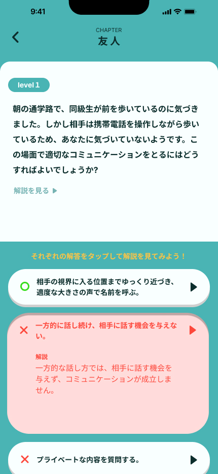

新たな一歩を踏み出そう
URL
https://github.com/U-T-kuroitigo/RestfulAPI
https://drive.google.com/file/d/11frQAYj9pffmJ4aXkmxMr0nE5QCQoIku/view?usp=sharing
https://drive.google.com/file/d/1O2dY97sbzXkiQrfxP3MwYojXEt41wTew/view?usp=sharing
システム概要
高校進学時の対人関係を学ぶためのコミュニケーション能力向上を目的としたサービス。
高校進学後の学校生活で起こり得る対人コミュニケーションに関するシチュエーションを選択問題形式でユーザーに解答してもらう。
コミュニケーション能力を向上させ、自信を与える。
技術スタック
クライアント側をNext.js、サーバー側をecho(Go)、GORM、MySQLで実装。
サーバー側はechoを用いてRestfulなAPIサーバーを作成。GORMを経由してMySQLを操作しデータのやり取りをする。
キャッチコピー
新たな一歩を踏み出そう
役割
企画の作り込み・肉付け、echoサーバーの整備、DB設計、DB実装、DB操作用基本APIの実装、クライアント用APIの設計の監修、サーバー側のテックリード的立ち回り。
役割詳細
企画の作り込み・肉付け :
企画の話し合いで出た案から疑問点や問題点を考えてメンバーに共有する。また、それらを解決するための方法をメンバーと相談して、企画として適当な形に着地させる。
echoサーバーの整備 :
Go言語フレームワークであるechoによるAPIサーバーを用意。httpリクエストに従いレスポンスを返す。
DB設計 :
メンバーとペアプログラミング（ナビゲーター側）の形式で設計の練習を行いつつ、独自でも設計をしていた。時間の関係上、実装環境では独自で設計したものを使用。
DB実装 :
GORMのv2を用いてMySQLデータベースをechoのAPIサーバー上に実装。
DB操作用基本APIの実装 :
DB実装と並行で、テストとして基本的な操作であるSELECT、INSERT、UPDATE、DELETEをそれぞれhttp通信のGET、POST、PUT、DELETEに対応して実行できるものを実装。
クライアント用APIの設計の監修 :
メンバーが作成したAPI設計書に基づいてそのメンバーと疑問点の列挙及び相談を行い、より適した形に修正できるようにした。
サーバー側のテックリード的立ち回り :
サーバー側の役割分担、環境構築、手順書の作成、メンバーの作業の監督。
ターゲット
いじめられた経験によって不登校になってしまった中学生
12歳 〜 15歳
コミュニケーション不足
高校進学を決意している